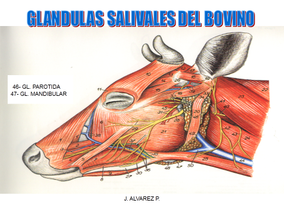
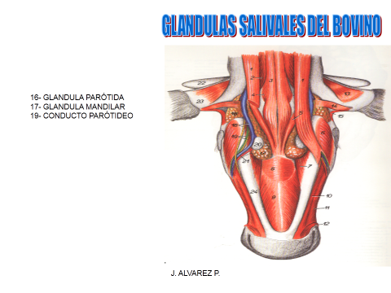
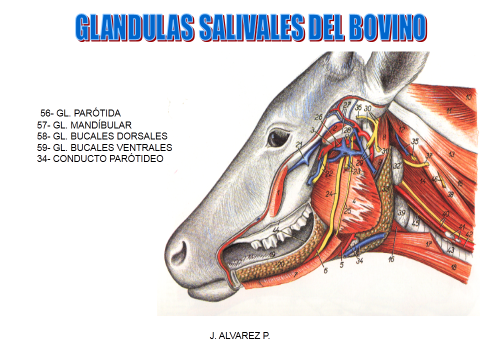
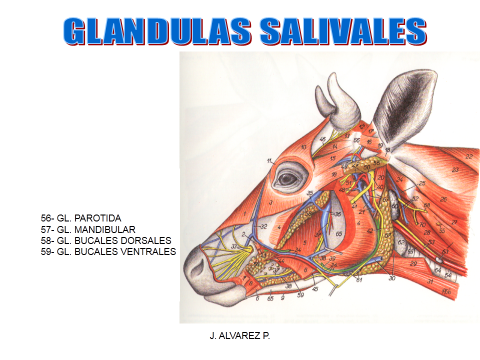

Al pastar u hojear, la comida se mastica solamente para ser mezclada con la saliva y formar un bolo del tamaño adecuado para tragarse. La saliva, es una mezcla de líquido de seroso y mucoso, se libera por el estímulo de masticar desde cinco pares de glándula. Las parótidas, que se localizan detrás el ángulo de la mandíbula; las submaxilaries, en los lados interiores de las parótidas; las sublinguales, en cada lado de la base de lengua; y las molares inferiores y bucales en las mejillas.1 Las unidades básicas de glándulas salivales son los grupos de células llamadas un acini. Estas células secretan un líquido que contiene agua, electrolitos, moco y enzimas, todos los cuales fluyen fuera del acini hacia los conductos colectores .
   